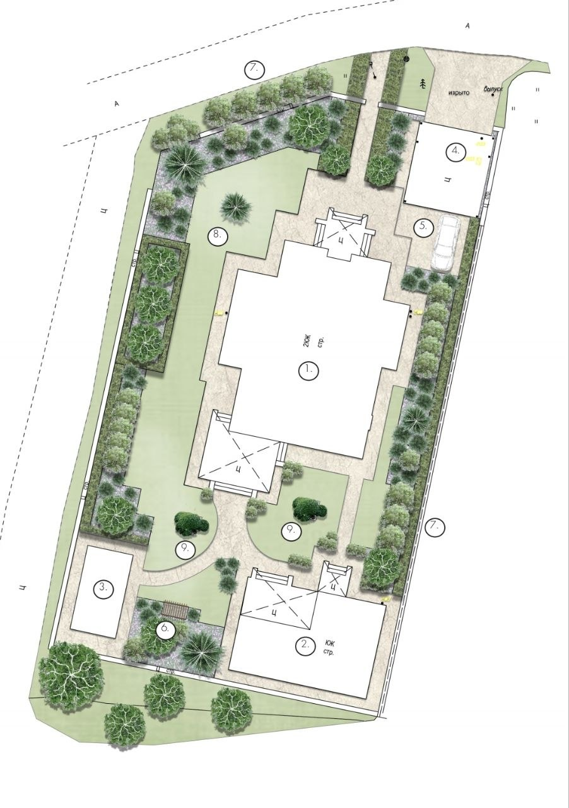
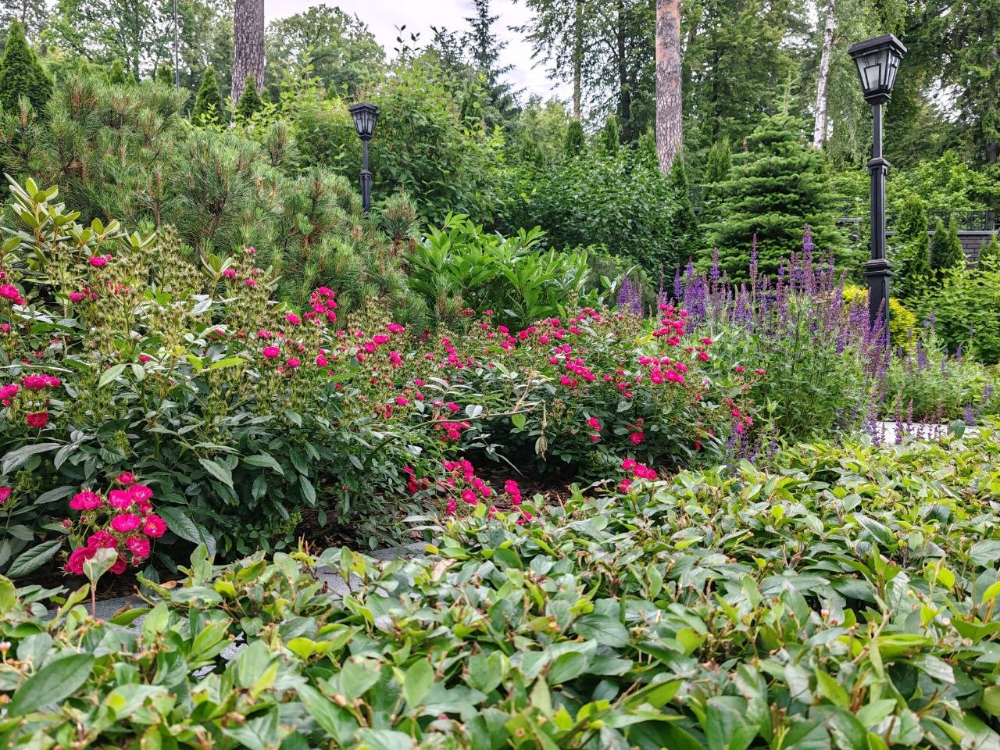
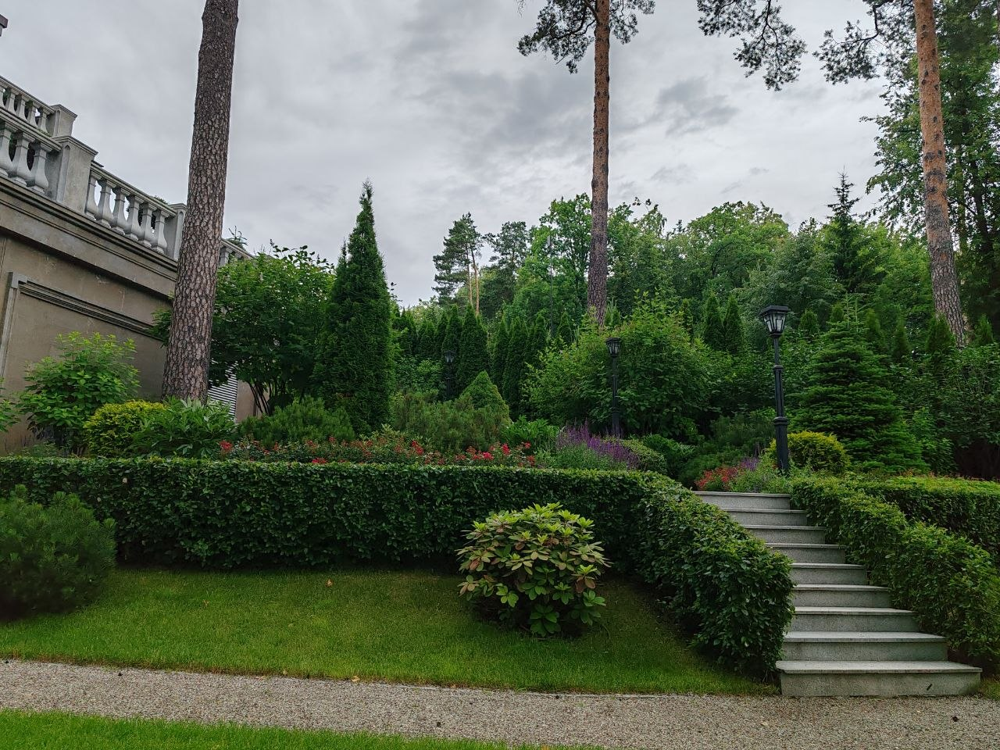
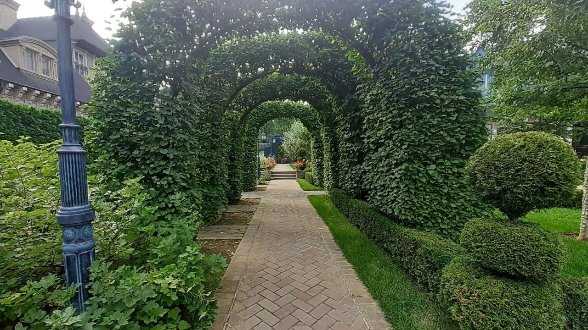
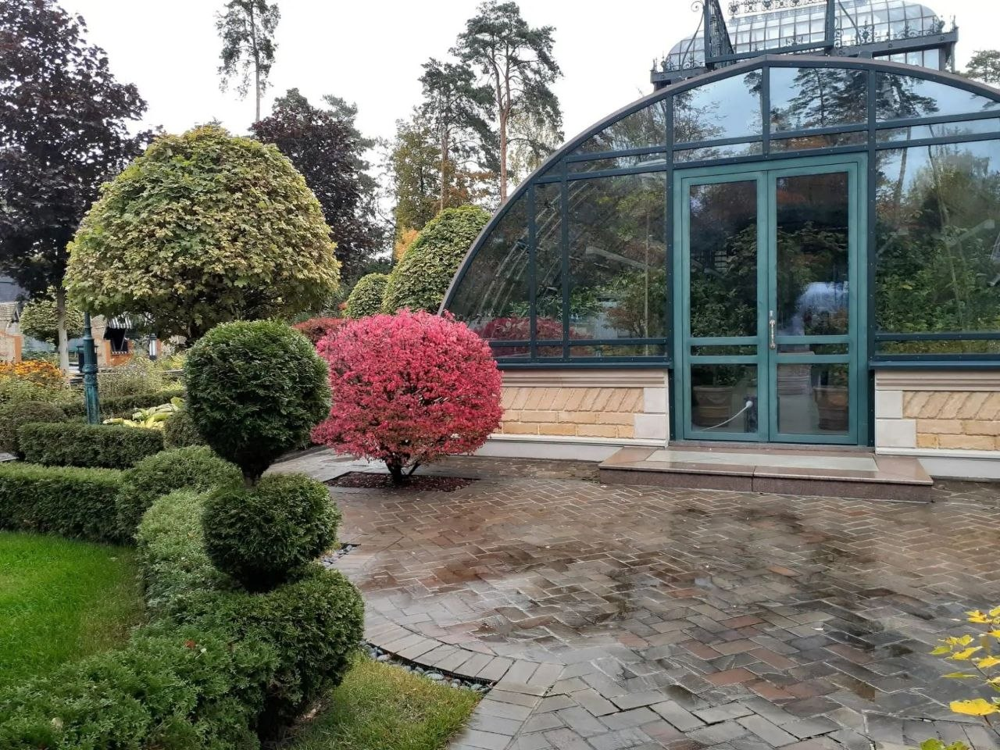

От плана участка до живого сада
Ландшафтный проект, посадка растений, рулонный газон и уход за садом в Москве и области. Анастасия Василькова ведёт объект от первого эскиза до посаженного растения.
- Проект участка
- от 30 000 ₽
- Рулонный газон
- от 500 ₽/м²
- Консультация агронома
- 10 000 ₽

Хороший сад не складывается из отдельных кустов и газона. Он начинается с плана, где растения, дорожки и свет работают вместе.
Восемь работ — один сад




Проект участка: план зон, дорожек и посадок
-
Ландшафтное проектирование
Планировка участка, зонирование, подбор растений и материалов. План, по которому потом работают на земле.
от 30 000 ₽ за проект участка
-
Посадка растений
Деревья, кустарники, многолетники, хвойные. Посадка без гарантии или с гарантией приживаемости.
30 % от стоимости растений без гарантии, 50 % с гарантией
-
Устройство рулонного газона
Подготовка основания и укладка. Ровный зелёный покров сразу, без ожидания всходов.
от 500 ₽ за м²
-
Благоустройство территории
Дорожки, площадки, малые формы, освещение. Участок, по которому приятно ходить, а не только смотреть.
по смете после осмотра участка
-
Контейнерное озеленение
Кашпо, вазоны и композиции для террас, входных групп и патио. Быстрый способ оживить участок.
по смете под вашу задачу
-
Уход за садом
Стрижка, полив, подкормка, обрезка, подготовка к сезону. Сад остаётся таким, каким его посадили.
от 18 000 ₽ за выезд
-
Реконструкция сада
Старая планировка, разросшиеся посадки, уставший газон. Обновляем, не начиная с нуля.
по смете после осмотра участка
-
Консультация агронома
Выезд на участок, диагностика почвы и растений, рекомендации по посадкам и уходу.
10 000 ₽ за консультацию
Посадка с гарантией или без
30 %
от стоимости растений, без гарантии
Растения посажены по правилам, дальше приживаемость на вашей стороне. Подходит, если вы сами будете ухаживать и готовы пересаживать.
50 %
от стоимости растений, с гарантией
Не прижилось растение — пересаживаем бесплатно. Вы платите один раз и не следите, что принялось, а что нет.
Растения на 200 000 ₽: посадка 60 000 ₽ без гарантии или 100 000 ₽ с гарантией. Разница в 40 000 ₽ страхует всю посадку.
От звонка до сдачи: пять шагов
Заявка и звонок
Обсуждаем задачу, площадь и пожелания. Договариваемся о выезде на участок.
Выезд и осмотр
Оцениваем почву, освещённость, существующие посадки. Консультация агронома — по желанию.
Проект и смета
Готовим план участка, подбираем растения, называем точную стоимость работ.
Работы на участке
Посадки, газон, дорожки, контейнеры. Всё по согласованному плану и графику.
Сдача и уход
Показываем результат, даём рекомендации по уходу или берём сад на сопровождение.
Сады, которые уже выросли
Вопросы перед заявкой
Сколько стоит проект участка?
От 30 000 ₽. Итог зависит от площади и сложности планировки. Точную сумму называем после осмотра участка.
Чем отличается посадка с гарантией?
Без гарантии посадка стоит 30 % от цены растений, и приживаемость на вашей стороне. С гарантией — 50 %, и не прижившееся растение пересаживаем бесплатно.
Можно заказать только рулонный газон, без проекта?
Да. Устройство рулонного газона — отдельная услуга от 500 ₽ за м², в неё входят подготовка основания и укладка.
Нужна ли консультация агронома отдельно?
Если сад уже есть и растения болеют или не растут, достаточно консультации за 10 000 ₽: диагностика почвы и растений на месте и рекомендации. Полный проект для этого не нужен.
Какие растения вы используете?
Подбираем под конкретный участок: климат, освещённость, тип почвы. Работаем и с посадочным материалом, который вы уже купили, и с закупкой.
В какие районы выезжаете?
Москва и Московская область.
Обсудим ваш участок
Расскажите, что есть на участке и что хочется получить. Свяжемся в течение дня и предложим время выезда.